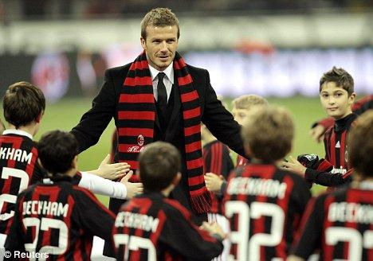
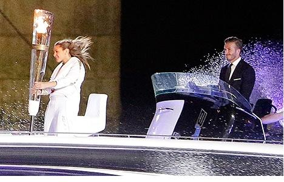
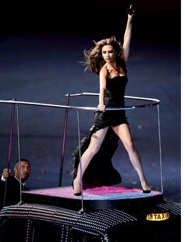

Chương Hai Mươi

LS cũng như V-League của Việt Nam, có những đặc thù rất riêng, không thích hợp cho những ông thầy ngoại quốc. Theo sau những thất bại liên tiếp, Tim Leiweke cuối cùng đã có quyết định đúng đắn khi thuê Bruce Arena. Arena không chỉ là một HLV bản xứ, ông còn sở hữu chuyên môn rất cao, có thể nói là giỏi nhất Hoa Kỳ. Ông từng giành 2 chức VĐQG với DC United, trước khi dẫn dắt đội tuyển Mỹ trong 8 năm, thành tích đỉnh cao là lọt vào tứ kết World Cup 2002. Một lúc loại trừ cả Alexi Lalas, Terry Byrne, và Ruud Gullit, Leiweke tin tưởng trao toàn quyền vào tay Arena, bổ nhiệm ông làm tổng giám đốc kiêm HLV trưởng.
Không còn tình trạng quyền lực chia năm xẻ bảy, Galaxy trở nên một khối thống nhất. Arena nhanh chóng bắt tay vào công cuộc cải tổ, chỉnh sửa những sai lầm thời Gullit. Gullit là một HLV rất tài tử, làm việc lè phè, ngày nào cũng trưa trờ trưa trật mới đến sân tập, rồi mới đầu buổi chiều đã xách giỏ ra về. Bài vở của Gullit thì toàn là chia cầu thủ ra làm hai đội, đá chơi với nhau. Trước mỗi trận đấu, Gullit chẳng thèm quan tâm tìm hiểu đối phương. Arena làm việc chuyên nghiệp hơn rất nhiều. Ông bắt học trò phải tập lâu, tập nặng, rèn luyện từng kỹ năng riêng biệt, cũng như luôn chú trọng đến công tác trinh sát, theo dõi sát sao các đội đối thủ. Đến CLB quá muộn, Arena không kịp làm nên khác biệt trong mùa 2008, nhưng khi mùa 2009 bắt đầu, người ta thấy Galaxy hừng hực một khí thế mới. Chỉ tiếc rằng trong đội hình hừng hực khí thế ấy, không có David Beckham.
Khi đã lớn tuổi, nhiều cầu thủ quyết định từ giã ĐTQG để tập trung sức lực cho CLB. David thì không thế, niềm khát khao khoác áo đội tuyển luôn cháy bỏng trong anh. David luôn hy vọng được đến Nam Phi năm 2010, dự World Cup một lần cuối cùng. Khó một điều là mùa giải MLS chỉ kéo dài từ tháng 3 đến tháng 10[1]. Nếu phải ngồi chơi xơi nước suốt bốn tháng mỗi năm, e rất khó duy trì phong độ để trụ lại được trong đội tuyển. Đầu năm 2008, David giải quyết vấn đề bằng cách bay về nước tập chung với Arsenal, song anh nhanh chóng nhận ra rằng chỉ tập chay thì không thể đủ, cần phải ra sân thi đấu, cọ xát thật sự. Do đó, khi mùa giải 2008 kết thúc, David tuyên bố anh sẽ chuyển sang chơi cho AC Milan, theo hợp đồng cho mượn từ tháng một đến tháng ba, 2009.
David Beckham, một biểu tượng thời trang, thi đấu tại Milan, kinh đô thời trang thế giới, còn gì phù hợp hơn thế? Năm 2007, David đã từng tính chuyện chuyển đến AC Milan, trước khi đạt thỏa thuận với Galaxy. Dẫu chỉ mượn ngắn hạn Beckham, Milan vẫn tổ chức lễ ra mắt rầm rộ, với sự hiện diện của đông đảo phóng viên. Tại buổi lễ, David được trao chiếc áo số 32.
Vừa đến nơi, David bắt nhịp được ngay với CLB. Ngày 25 tháng một, mới trận thứ ba ra quân trong màu áo đỏ đen, anh đã đóng góp một bàn, giúp Milan thắng đậm Bologna 4 - 1. Vài ngày sau, lại là anh lập công, trong trận hòa 1 – 1 với Genoa. Không chỉ ghi bàn, David còn gây ấn tượng với lối chơi xông xáo, cống hiến, hỗ trợ đắc lực cho đồng đội. Lúc David mới tới Milan, fan hâm mộ nhìn anh với ánh mắt nghi ngờ: Đem anh chàng này về làm gì đây? Chắc chỉ để bán áo. 34 tuổi rồi, 2 năm qua lại chỉ đá giải Mỹ, kỹ năng chắc cùn hết còn đâu. Chỉ qua vài trận, mọi nỗi nghi ngờ đều tan biến. “Hồi đầu ai mà chẳng hoài nghi, chính Milan cũng thừa nhận vụ mượn cầu thủ này mang nhiều tính PR kia mà”, sử gia bóng đá John Foot nhận định, “Bây giờ người ta mới kinh ngạc, không ngờ Beckham đá còn khá vậy”. “Tôi không thích mấy cái chuyện showbiz bên ngoài bóng đá của Beckham”, một milanista nói, “Song phải công nhận những chuyện đó không làm Beckham xao lãng. Trên sân cỏ, anh ta vẫn cống hiến hết mình, và đã trở thành một trong những trụ cột của Milan.”

Beckham được chào đón tại Milan (Ảnh: Dailymail)
Bất ngờ trước phong độ của David, Milan tiến hành thương lượng với Galaxy, hòng mua đứt anh. Bản thân David cũng lên tiếng muốn ở lại nước Ý. “Chơi cho Milan là một trải nghiệm tuyệt vời, tuyệt hơn tôi mong đợi”, anh nói, “Toàn đội chào đón tôi, khiến tôi cảm thấy như đang ở nhà, không muốn rời đi nữa”.
Trong lịch sử bóng đá, không thiếu những trường hợp đã lui về dưỡng già rồi lại tái xuất. Peter Schmeichel là một điển hình. Sau cú ăn ba lịch sử với Manchester United, thủ thành người Đan Mạch chuyển đến BĐN, một môi trường ít áp lực, bắt cho Sporting Lisbon. Được hai năm, anh lại nhớ bóng đá đỉnh cao, nên trở về giải ngoại hạng Anh, lần lượt trấn giữ cầu môn cho Aston Villa và Manchester City. Beckham có lẽ cũng giống Schmeichel. Không về châu Âu thì thôi, chứ đã về, ai còn muốn quay lại MLS? Càng nhớ đến nửa cuối mùa giải 2008, nhớ đến lối đá bạc nhược của Galaxy, cùng tình trạng mất đoàn kết trong nội bộ đội bóng, David càng chán ngán.
Chẳng cần nói cũng biết Leiweke nhất quyết không để Beckham ra đi. Ông hét giá chuyển nhượng thật cao, khiến Milan phải chùn tay. Không mua nổi David, nhưng Milan trả thêm tiền cho Galaxy để được mượn anh đến tận tháng 7, 2009, khi mùa giải Italy kết thúc. Tổng cộng cả mùa, David chơi cho Milan 20 trận, giúp đội cán đích hạng ba trên bảng xếp hạng Serie A, giành quyền dự Cúp C1, để lại cảm tình sâu đậm nơi người hâm mộ Ý. Anh chia tay Milan, với lời hẹn sẽ tái ngộ vào năm sau, cũng theo hợp đồng cho mượn.
Khi David trở về Mỹ, mùa giải mới đã đi được hơn nửa chặng đường, chỉ còn 3 tháng là kết thúc. Anh vấp phải sự chỉ trích mạnh mẽ từ phía CĐV: Chúng tôi mua vé mùa chỉ vì anh, mà anh đi một hơi 7 tháng liền là sao? Ai bồi thường tiền cho chúng tôi? Giữa làn sóng công kích, David còn ngỡ ngàng nhận ra mình đã mất luôn băng đội trưởng. Trong thời gian anh ở Ý, Bruce Arena đã trao nó lại cho Landon Donovan, trao hẳn luôn, chứ không chỉ tạm thời lúc Beckham đi vắng.
Dù vậy, David vẫn cảm thấy phấn chấn, vì không khí tại CLB đã khác hẳn. Cuộc cách mạng của Arena đã đạt được những thành quả bước đầu. Cầu thủ Galaxy giờ đây gắn bó với nhau hơn, thể lực tốt hơn, và thi đấu với tinh thần cao hơn. Lấy lại được vị trí thủ quân, Donovan cũng không còn kèn cựa Beckham như trước. Trong thời gian 3 tháng còn lại, David kịp đá 15 trận, ghi 2 bàn, đưa Galaxy từ hạng ba lên hạng nhất, giành chức vô địch miền Tây, và vào đến trận chung kết vòng play-off gặp Real Salt Lake. Tiếc rằng đội lại thất bại khi đã bước đến ngưỡng cửa thiên đàng. Trận Galaxy – Real hòa 1 – 1 sau 120 phút, phải giải quyết bằng những loạt luân lưu. David đá thành công quả sút đầu tiên, nhưng 3 đồng đội anh lần lượt đá hỏng, khiến Galaxy thua chung cuộc 4 – 6. Thành tích cải thiện làm vừa lòng người hâm mộ, nên khi David sang Milan lần hai, không ai phản đối gì nhiều, miễn anh không gia hạn hợp đồng đến tháng 7 như lần trước là được.
Nhưng ai học được chữ ngờ. Nếu như lần đầu đến với Milan, David có một trải nghiệm tuyệt vời, thì lần thứ hai lại là thảm họa. Tháng 3 – 2010, trong trận Milan gặp Chievo, anh bị chấn thương nặng: rách gân A- sin[2]. Mặc dù được phẫu thuật bởi Sakari Orava, một phẫu thuật gia thể thao hàng đầu thế giới, David không thể bình phục trước tháng chín. Giấc mộng World Cup thế là tan vỡ. Vẫn có tên trong danh sách đến Nam Phi, song David chỉ có thể ngồi ngoài, động viên tinh thần toàn đội. Số lần chơi cho Tam Sư của anh vĩnh viễn dừng lại ở con số 115 (Lần cuối cùng là trận Anh – Belarus 3 – 0, diễn ra ngày 14 tháng 10, 2009). Trong danh sách các cầu thủ khoác áo ĐTQG Anh nhiều nhất, David đứng thứ hai, chỉ sau thủ môn Peter Shilton (125 lần).
Rảnh rỗi vì chấn thương, David tận dụng thời gian làm công tác xã hội, rồi đi học nấu ăn và tập yoga. Anh thực hiện cả nhiệm vụ chính trị, tháp tùng bộ trưởng ngoại giao William Hague và bộ trưởng quốc phòng Liam Fox sang Afghanistan, động viên tinh thần binh sỹ Anh đang trú đóng tại đây để chiến đấu với lực lượng Taliban. Mùa 2010, Galaxy đứng đầu lượt đấu vòng tròn, giành cả chức vô địch miền Tây lẫn MLS Supporters’ Shield, nhưng Beckham chỉ chơi một vài trận cuối, không đóng góp được nhiều.
Năm 2010 với David đáng quên bao nhiêu, thì 2011 đáng nhớ bấy nhiêu. Sau nhiều năm chờ đợi, anh đã có đủ “cả nếp lẫn tẻ”. Ngày 20 tháng 7, Victoria hạ sinh bé gái Harper ở bệnh viện Cedars Sinai, Los Angeles. Bé gái giống mẹ lúc nhỏ như đúc, còn vì sao em được đặt tên Harper thì không ai rõ. Có người nói Harper là đặt theo Harper’s Bazaar, tên một tạp chí thời trang, người khác lại bảo đặt theo tên nhà văn Harper Lee, tác giả tiểu thuyết bất hủ To Kill A Mocking Bird.
Trên sân cỏ, giấc mơ World Cup đã tan thành mây khói, David không còn chi vương vấn, từ đây có thể toàn tâm toàn ý với Galaxy. Thay vì sang Milan, anh tập chung cùng Tottenham, rồi trở về Mỹ đúng hạn, chuẩn bị cho mùa giải mới. Sau hai năm liền không cống hiến được bao nhiêu cho CLB (2009 chỉ chơi chưa tới nửa mùa, 2010 nghỉ gần hết giải), David quyết “đoái công chuộc tội”, dốc sức đáp ứng kỳ vọng người hâm mộ. Mùa 2011, anh thực sự trở thành linh hồn của Galaxy. Thể lực đã sút giảm, nhưng vẫn còn đó ở anh những cú sút phạt sở trường mang thương hiệu Beckham, những đường chuyền dài chính xác đến từng ly, những cú phất điệu nghệ từ cự ly 40 – 50m, đưa bóng đến tận chân đồng đội. “Ở giải Mỹ này, khả năng cầm và chuyền bóng của Beckham vẫn là độc nhất vô nhị”, Bruce Arena nhận xét, “Trận nào cũng vậy, Beckham luôn là người chạm bóng nhiều nhất.”
Được bổ sung thêm tiền đạo người Ireland Robbie Keane, hàng công Galaxy như có thêm cánh. Beckham liên tục dọn cỗ cho Donovan và Keane nổ súng. Tính cả mùa giải, David đứng thứ nhì trong danh sách những cầu thủ kiến tạo nhiều nhất, với 15 đường chuyền thành bàn. Anh chỉ hai lần lập công, song cả hai đều tuyệt đẹp. Bàn đầu là cú sút phạt từ 30m vào lưới Sporting Kansas City, bàn sau được ghi trực tiếp từ chấm phạt góc, trận Galaxy hạ Chicago Fire 2 – 1. Đây là lần thứ hai David ghi bàn từ phạt góc, lần đầu tiên đã diễn ra 16 năm về trước, trong màu áo Preston North End.
Được David truyền cảm hứng thúc đẩy, Galaxy lại vô địch miền Tây và giành MLS Supporters’ Shield. Trong trận chung kết vòng play-off, đội đả bại Houston Dynamo bằng bàn thắng duy nhất của Donovan, đăng quang ngôi VĐQG Mỹ. Beckham được chọn vào đội hình tiêu biểu MLS mùa 2011, và nhận giải Cầu Thủ Có Màn Tái Xuất Ngoạn Mục Nhất Trong Năm[3]. Anh cuối cùng đã có thể tự hào: Vụ chuyển nhượng sang Galaxy không chỉ thành công về thương mại, mà còn gặt hái thành quả về chuyên môn. Trong cơn hứng khởi, David đặt bút ký gia hạn hợp đồng thêm hai năm.
Nói đến Beckham và năm 2012, không ai quên được hình ảnh David mặc áo vest đen lịch lãm, đứng bên ngọn đuốc thiêng Thế Vận, cưỡi ca nô lướt trên sóng bạc sông Thames. Đêm khai mạc Olympics, những người con ưu tú nhất Anh Quốc cùng nhau tụ họp, trong số đó dĩ nhiên không thể thiếu vợ chồng Beckham. Góp công lớn giúp London giành quyền tổ chức Olympics, David xứng đáng nhận vinh dự rước đuốc, còn Victoria tái hợp cùng những bạn cũ trong nhóm Spice Girls, biểu diễn những ca khúc đình đám một thời.
Nhưng cũng đừng quên: 2012 đánh dấu vũ điệu thiên nga trong sự nghiệp Beckham. Trước lúc rời vũ đài, dường như Beckham dốc toàn sức lực, tỏa sáng thêm lần cuối. Nếu như năm 2011, David chủ yếu kiến tạo, thì sang 2012, anh vừa kiến tạo, vừa bùng nổ bàn thắng. Lần đầu tiên kể từ lúc rời Manchester United năm 2003, David ghi đến 8 bàn trong một mùa giải. Galaxy lại vào trận chung kết, và lại gặp Houston Dynamo.
Trước trận chung kết, một “quả bom” phát nổ!


David và Victoria tại Thế Vận Hội London 2012: Chồng rước đuốc, vợ biểu diễn (Ảnh: USmagazine và Nowmagazine)
Chú thích:
[1] Nếu tính cả vòng play-off thì đến tháng 11.
[2] Trước đó, vào tháng hai, tại vòng 1/16 Cúp C1, David lần đầu đối mặt cùng các đồng đội cũ ở Manchester United. AC Milan bị United “làm gỏi”: lượt đi thua 2 – 3, lượt về thua 0 – 4.
[3] Giải thưởng giành cho cầu thủ không thi đấu nhiều trong mùa trước, nhưng thể hiện phong độ xuất sắc ở mùa hiện tại.